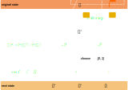

Thermodynamic Model
Work in progress
Monte Carlo in a nutshell
Let \(\cal{H}(\sigma)\) be the Hamiltonian of the state \(\sigma\).
From statistical mechanics we know that in equilibrium at some temperature \(T\) the distribution follows the
following distribution:
\[\rho ( \sigma) = \frac{\exp(-\frac{\cal{H}(\sigma)}{k_b T})}{Z}\]
where \(Z\) is the partition function given by:
\[Z = \sum \exp(-\frac{\cal{H}(\sigma)}{k_b T})\]
The partition function is complicated to solve analytically and for large systems it is too computationally
expensive to run through all states to calculate it directly.
The Monte Carlo method provides a way to generate the probability distribution state by state allowing
macroscopic thermodynamic variables to be calculated.
For this we start with some initial state which is then updated by the following process:
- Start with some initial state for this step.
- Make a small change to the state.
- Compare the Hamiltonians of the states.
- If the Hamiltonian is lower in the new state the new state is accepted.
- If the Hamiltonian is higher the new state is accepted with probability \(p=\exp(-\frac{\Delta
\cal{H}}{k_b T})\)

This Model
To implement a Monte Carlo simulation for a system we need to describe three things about the system.
States
For this model the state of the system is described by a two-dimensional array at each position there is a
either an atom A or an atom B. Periodic boundary conditions apply. If
Move Vacancy is chosen additionally
there is a single vacancy present in the grid.
Hamiltonian
For the Hamiltonian of this model a nearest neighbor approximation is used.
It is calculated by summing all nearest neighbors interactions.
Where A↔A, A↔B and B↔B refer to the interaction energy between these atoms.
Changing the State
Swap
The swap method is a very simple way to change the state of the system. Two positions in the grid with different
entries are chosen and then swapped.
Move Vacancy
For this method of changing the state a neighbor to the vacancy is chosen and then exchanged with the vacancy
Notes on the Block Size Statistics